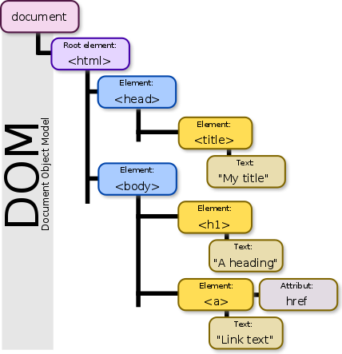
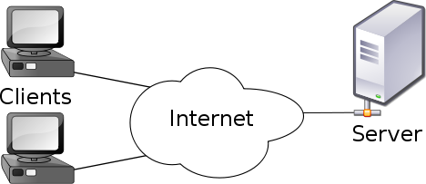
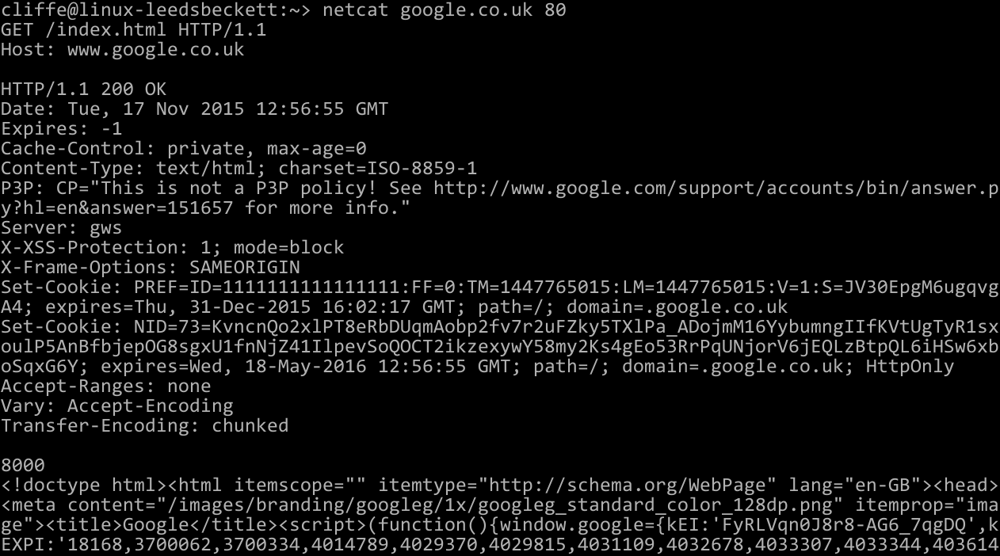
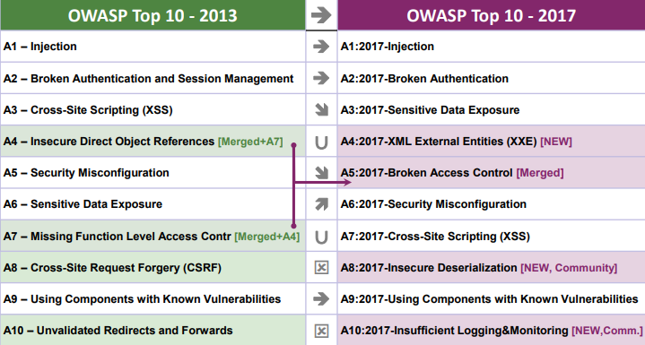
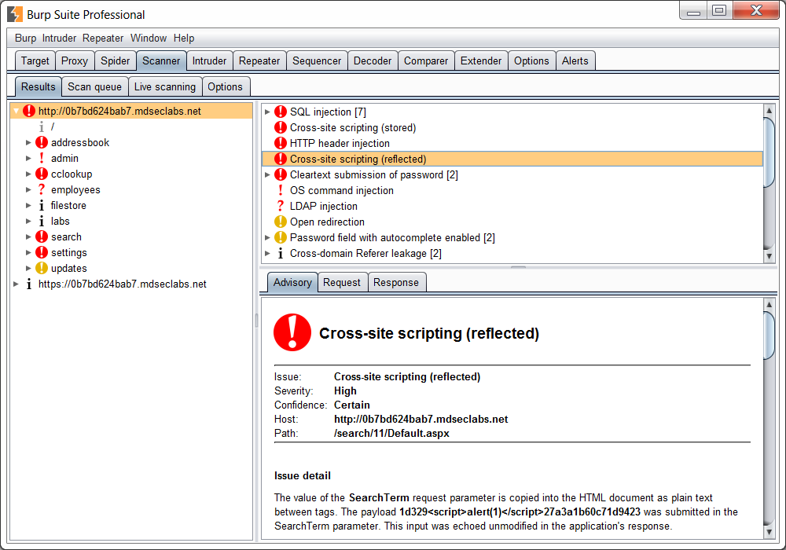

Web security
Z. Cliffe Schreuders


This content and code (including slides CSS, HTML, and JS) by Z. Cliffe Schreuders is dual licensed under a Creative Commons Attribution-ShareAlike v4.0 International License and GNU Affero General Public License v3.
Lecture recordings are published on the VLE and YouTube.
Web security
- As time has gone on, more and more infrastructure has moved to Web-based technologies
- Web sites / Web apps are very popular
- Often they are bespoke / customised for organisations
- Often based on various frameworks and content management systems (CMS)
- Web apps have particular kinds of security pitfalls, and have become targets of specialised attacks and assessments
Image Web Sparklers by Ingrid Taylar
Web basics
- Three core technologies make up web pages, as they are displayed client side:
- HTML
- CSS
- Javascript
HTML
- Hypertext Markup Language (HTML) is the markup language that defines the content of web pages
html_code:<!DOCTYPE html>
<html>
<head>
<title>This is a title</title>
</head>
<body>
<h1>This is a heading</h1>
<p>Hello world!</p>
</body>
</html>
CSS
- Cascading Style Sheets (CSS) defines the presentation of (typically) HTML content
- Inline:
css_code:<h1 style="color:red;">Red heading</h1>
- Separate style:
css_code:<style>
h1 {color: red;}
</style>
Javascript (JS)
- Javascript makes web pages interactive
- All modern web browsers contain a Javascript engine, based on the ECMAScript specification
- JS is a weakly and dynamically typed programming language
- Can execute statements in strings at run-time
- JS can modify the environment/DOM...
JS can alter the Website
Document Object Model (DOM)
- HTML document internally modelled and accessed as a tree structure
- Modifying the DOM alters the website that is rendered
- JavaScript can add, change, and remove DOM elements and attributes (and CSS styles)
{kind=link}
Web architecture
- Client/server
- In the clear (port 80, http://)
- Encrypted via PKI (port 443, https://)
Web architecture
- Hypertext Transfer Protocol (HTTP) is a request-response protocol
- Application layer (on top of TCP)
- Client (user agent, eg. web browser) connects to server
- Client makes request
- GET /index.html HTTP/1.1
- Host: www.example.com
- Server responds...
Web architecture
- Server responds:
- HTTP/1.1 200 OK
Date: Mon, 23 May 2005 22:38:34 GMT
Server: Apache/1.3.3.7 (Unix) (Red-Hat/Linux)
Last-Modified: Wed, 08 Jan 2003 23:11:55 GMT
ETag: "3f80f-1b6-3e1cb03b"
Content-Type: text/html; charset=UTF-8
Content-Length: 138
Accept-Ranges: bytes
Connection: close
<html>
<head><title>An Example Page</title></head>
<body>Hello World, this is a very simple HTML document.</body>
</html>
- HTTP/1.1 200 OK
Web architecture
Web architecture
- Originally the Web was made up of static HTML pages
- Web 2.0: interactive websites
- Code on server side (PHP, Java, etc)
- Code on client side (Javascript, Flash, etc)
- Databases are used to store and retrieve data
- Typically server side via SQL
- HTML5 makes it possible to store on the client
Javascript (JS) frameworks
- JavaScript libraries, such as jQuery add extra features and ways of coding websites
- Frameworks such as Angular, React, and Vue.js change the way web apps are developed and drive more logic to the client side (such as GUI/Widget based)
- Single page webapps rely heavily on JS frameworks
Ajax
- “Asynchronous JavaScript And XML”
- Enables web pages to change dynamically without reloading the entire page
- Typically JS is used to make an XMLHttpRequest
- The resulting response is typically JSON or XML data, which JS receives and then updates the DOM
Javascript security
- JS can modify the environment/DOM
- Can only access web resources; not files on the local system, except through user interaction
- Same-origin policy: scripts from one Web site do not have access to data from other sites
- Lots can go wrong
Content Management Systems (CMS)
- CMS are server-side
- A framework for building websites
- Wordpress (29% of the Web), Joomla, Drupal, SiteFinity
- Most have been written in PHP
- Designed to enable non-technical people to update content
- Extendable
- CMS and extensions can have vulnerabilities
WPScan
- Wordpress and it’s extensions have included critical security vulnerabilities
- WPScan is a WordPress vulnerability scanner
- Tests for misconfigurations and vulnerable versions
Web services
- In addition to web sites / apps, web services are used for machine-to-machine interactions
- For example, an interface used to query an online database, which is called by mobile apps and also other websites or software
Web services: REST
- One of the most common kinds of interfaces are RESTful APIs (based on Representational State Transfer)
- Basically make individual requests to a service via standard HTTP methods (GET, PUT, POST, DELETE)
- Typically content of messages is JSON or XML
Web vulnerabilities
- Vulnerabilities in frameworks and CMS
- Vulnerabilities in bespoke code are common
- Misplaced trust in the client, server, or users
- Browser/sandbox implementation errors
- There are types of security mistakes that are commonly found in websites...
Types of Web vulnerabilities
Web proxies
- Web proxies enable security testing to tamper with the behaviour of clients and servers
- Burp suite
- OWASP ZAP
Web vulnerability scanners
- Many network vulnerability scanners (including Nessus and Nexpose) have Web scanning features
- Specialist tools also exist for various kinds of website testing (manual and automated):
- Burp suite
- OWASP ZAP
- w3af (web application attack and audit framework)
- Nikto
Crawling spiders
- Many tools crawl a site to download a copy of web pages and content
- Typically configurable: depth, max pages, etc
- May identify versions of frameworks, interesting content, etc
Image web-side ( #cc ) by marfis75
Finding vulnerable Web apps
- Automated scans may find obvious issues, but manual testing may be required to find less obvious flaws
- Because detecting coding flaws often involves interacting with the server with malicious code, there is a high risk of some impact on servers (vs other kinds of network scanning)
- Metasploit Pro and Nexpose both have web scanning features; MSP has more offensive/exploitation capabilities and delivers a payload
Conclusion
- Web security is of ever-growing importance
- Many technologies involved: HTTP/S, HTML, CSS, JS, CMS, PHP, Java, REST, ...
- Automated tools exist to scan for obvious issues
- More complex issues typically require more sophisticated approaches to testing
- Awareness of security issues in websites, and testing using web proxies